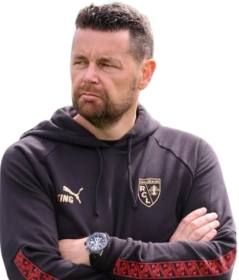
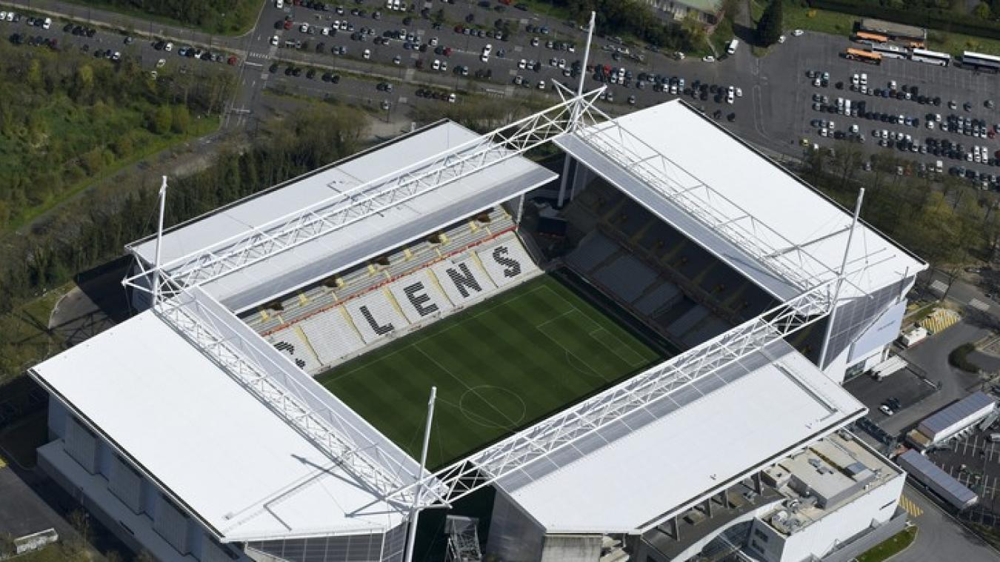

Treinador: Pierre Sage
Pierre Sage, nascido a 5 de maio de 1979, em França, é um treinador de futebol profissional que ganhou destaque pela sua notável recuperação do Olympique Lyonnais e, mais recentemente, pela sua nomeação como treinador principal do RC Lens.

Estádio: Stade Bollaert-Delelis
A história do Stade Bollaert-Delelis é profundamente enraizada na identidade mineira da região de Lens e é marcada por uma evolução de estádio oval para uma arena moderna e envolvente, conhecida pela sua atmosfera única.

Estilo de Jogo:
Pierre Sage utiliza um estilo de jogo no RC Lens que se caracteriza por uma abordagem moderna, focada na intensidade, organização defensiva e transições rápidas.
"Sang et Or!"